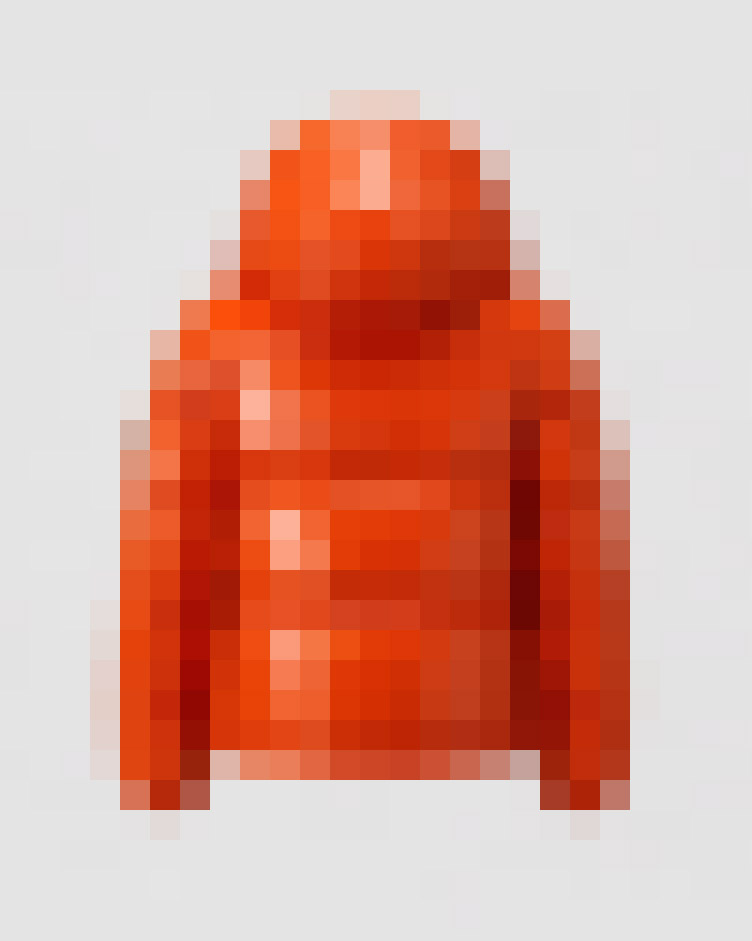

Role
Lead Product Designer · Systems Architect · Prototype Lead
Platform
60" Portrait Touchscreen Kiosk · Barcode Scanner · Raspberry Pi · Kinect Depth Camera · Walmart.com Data
Duration
Concept Through Pilot Launch
Walmart's mobile platform was undergoing a complete rebuild. Strategically, that made sense. Operationally, it created a hole in the store experience. Customers were still walking aisles. Shelves were still missing products. Endless Aisles was designed for that specific window of time — not to become the future of Walmart retail, but to protect the present while the future was being rebuilt.

The Two Audiences
One kiosk. Two humans.
The pilot began in toys because toys exposed the hardest version of the system. Adults were often buying for children, but not always with confidence about the category. They needed filters, comparisons, age ranges, product confidence, availability, and a fast path to purchase. Children, standing beside them, cared about none of that — they wanted motion, discovery, color, and play.
Both audiences occupied the same aisle. Both influenced the same purchase. Both had to be served by the same kiosk. If the interface only helped the adult, the child could pull the parent away before the purchase completed. If it only entertained the child, the adult had no reason to trust it. The product needed to hold attention and support decision-making at the same time.

The Architecture
The pattern had to hold.
Walmart does not have simple categories. Toys require age, interest, skill level, brand, and seasonality. Automotive requires compatibility, fitment, and part confidence. Sporting goods crosses activities, equipment types, sizes, use cases, and price points. Every department could make a reasonable argument for why it deserved a custom experience. That was the trap.
Custom experiences would have created a design and governance burden too large to maintain. So the system was designed around invariance. Find / Scan / Play became the operating model. The page structures, inventory logic, product detail patterns, navigation rules, and ship-to-home moments stayed fixed. The content could flex by department. The system could not. That constraint gave the platform its strength — toys, automotive, sporting goods, and the other departments were not separate products. They were category expressions inside one architecture.
The content changed. The system didn't.
The Validation
Start with the worst aisle.
The team did not wait for enterprise hardware procurement to validate the model. Functional prototypes were built with Raspberry Pi single-board computers and Kinect gesture tracking, then tested in live retail conditions. That decision compressed the learning cycle — instead of presenting a theoretical kiosk, the team watched real customers react to a working one.
Children were pulled in by the attract loop. Parents moved through the filter logic. Product pages were reached without prompting. Interactions completed without associate support. The store was the lab. If the architecture held in toys — the worst aisle, the most complex environment — it had a strong chance of holding anywhere. If it broke, the break would happen early enough to fix.

Outcomes
Designed to disappear.
Endless Aisles scaled to 20+ departments without requiring structural redesign. That was the architectural proof. Each new category became a content and configuration exercise, not a new product strategy conversation. Then the mobile rebuild accelerated.
The app absorbed the core functions faster than originally expected. In many organizations, that could look like a platform being replaced. Here, it was the intended outcome. Endless Aisles had been designed as a bridge. The bridge did its job. A temporary product can still be a serious product — it still needs logic, resilience, governance, hardware thinking, and operational clarity. Its success is measured by whether it protects the business during the transition, not by how long it survives.
20+
Departments scaled without structural modification
60"
Portrait touchscreen with inclusive 34"–48" interaction zone
3
Fixed interaction modes — Find, Scan, Play — across all categories
0
Associate interventions required during live retail testing
Reflection
The physical dimension of this project added constraints that pure digital design work rarely surfaces. The totem architecture — product housing, 60" touchscreen, depth-sensing Kinect camera, barcode scanner, and computer hardware — had to be mapped around a 36"w × 78"h frame. The accessibility requirement shaped everything: a reach band between 34" and 48" made the core touch area usable for children and people with disabilities, affecting layout, hierarchy, navigation placement, tap targets, scan behavior, and the balance between promotional content and active controls.
A portrait screen at retail scale changes the design problem. The upper screen can attract. The middle screen can guide. The lower screen must remain reachable. The hardware forced the interface to become a system of zones, not a page — and that constraint produced a better product than pure screen design would have.